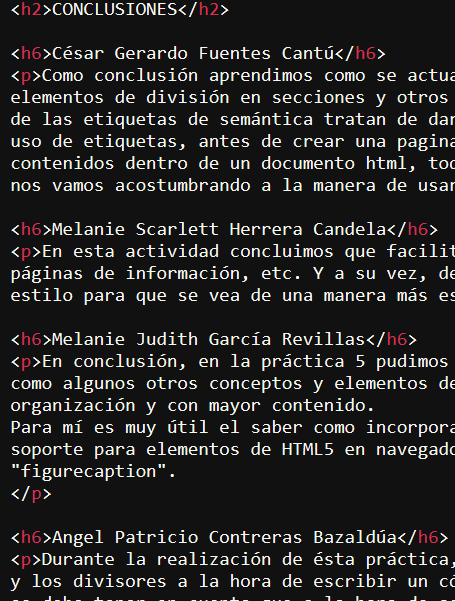
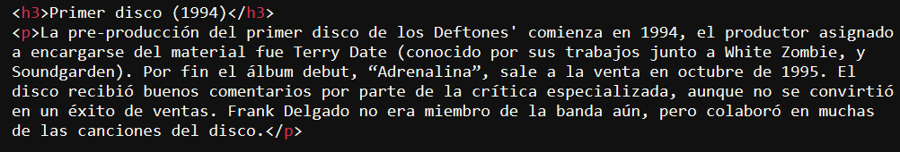
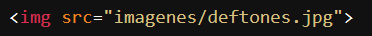
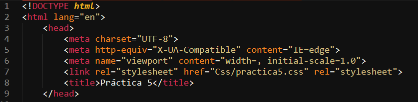
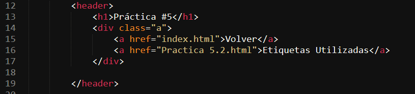
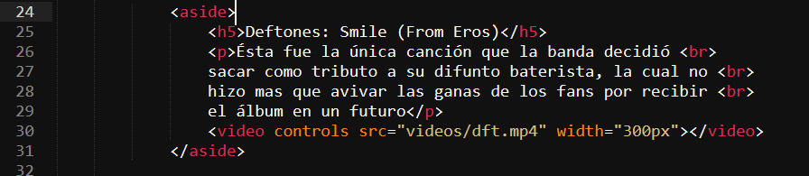
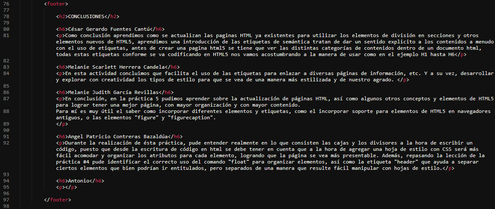
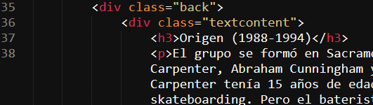

Secciones de código en las cuales se utilizaron las etiquetas solicitadas por el docente
"h1-h6"
Se utilizaron las etiquetas de título para dar formato y jerarquía al texto y en general, a la página, se les agregó estilo mediante hojas de cascada (CSS)
"p"
Se usó la etiqueta "p" para presentar en texto la información del tema elegido
"img"
Se utilizó la etiqueta "img" para agregar una imagen alineada con el texto
Declaración DOCTYPE
Al inicio de la página se estableció el tipo de documento con "DOCTYPE", siendo éste: html
"header"
Utilizamos "header" para separar elementos principales de los navegadores y que fuera más fácil acomodar las con hojas de estilo
"aside"
Se utilizó la etiqueta "aside" para conseguir ordenar la estructura de la página agregando información extra al lado derecho
"footer"
Se usó la etiqueta "footer" para agregar las conclusiones individuales de los integrantes del equipo
"video"
Etiqueta "video", utilizada para agregar un video complementario del tema elegido
"audio"
Etiqueta "audio", utilizada para agregar un audio complementario del tema elegido
"div"
Se utilizó la etiqueta "div" para organizar el código y que fuera más sencillo manipularlo mediante CSS
